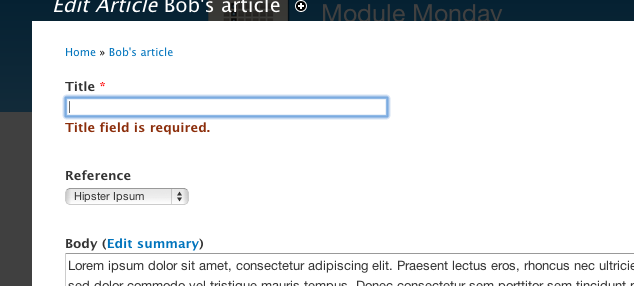

Acerca de mí
Mi nombre es Jesús Manuel Olivas
Me pueden encontrar en twitter como @jmolivas
En mi blog http://jmolivas.com
Y esto de que se trata ?
Cuando recién entras en el mundo de Drupal dificilmente vas a modificar módulos y codear hooks de manera inmediata.
Esta sesión es un vistazo general de módulos que te pueden servir para armar algo más que sitios de 4/5 páginas y un formulario de contacto. Adicionalmente se mostrará como agregar funcionalidad responsiva y que módulos podemos utilizar para lograr esto.
Esta sesión es un vistazo general de módulos que te pueden servir para armar algo más que sitios de 4/5 páginas y un formulario de contacto. Adicionalmente se mostrará como agregar funcionalidad responsiva y que módulos podemos utilizar para lograr esto.
WAT
Drupal es un CMS/CMF multipropósito
- Curva de aprendizaje inicial pronunciada.
- Cantidad mínima de módulos en el núcleo, instalación por defecto.
- Falta de uniformidad en interfaz visual.
- Compatibilidad inversa.
- El Drupal way.

Entonces...
Es algo así como un compilado de módulos (ModuleMonday de Lullabot + otros sitios), para poder construir un sitio en Drupal de una manera relativamente sencilla, dejando muy claro que un mayor número de modulos utilizados puede afectar el rendimiento del sitio.
Y donde busco módulos
- Sitio oficial
- IRC #drupal-es
- Grupo de usuarios
- Module Monday de Lullabot
Y que opina @eaton & @lullabot

Ya encontré uno y ahora qué hago ?
- Verificar estatus (Maintenance & Development)
- Revisar Issues & Reporte de Bugs
- Verificar actividad

Administración
Drush
Drush es un shell de linea de comando para Drupal
- Trabajo con paquetes. El manejador de paquetes drush le permite descargar, habilitar, deshabilitar, desinstalar y actualizar módulos, temas, perfiles y traducciones desde la linea de comando.
- Tareas administrativas. Ejecutar el cron, limpiar cache.
- Interacción con la base de datos. Nos permite exportar/importar la base de datos. Tambien podemos ejecutar consultas, ver las credenciales (usuario/contraseña) de acceso a la base de datos.
pear channel-discover pear.drush.org
pear install drush/drush
Quickstart
Es un entorno de desarrollo pre-configurado para Drupal.
- Soporte para Drupal 7 & Drupal 6
- Ubuntu Linux, Apache, MySQL, APC, XDebug, IMAP, UploadProgress
- Drush, drush make.
- Netbeans and Eclipse, configurado.
Devel
Permite entre otras cosas:
- Mostrar un reporte de todas las consultas (queries) que cada página realiza.
- Generación automatizada de nodos, comentarios, términos, usuarios y mucho más.
Administration menu
Proveé un menu para administración/navegación independiente del tema instalado.
Module filter
Permite buscar modulos de una manera sencilla, agrega un campo de busqueda y facilita la categorización agrupando en pestañas verticales.
Construcción
Entity Fields (CCK)
Permite agregar diferentes tipos de campos a nuestras entidades (Users, Nodes, Comments,etc)
Taxonomy
Permite Agregar terminos para categorizar nuestros tipos de contenido.

Node Queue
Permite crear listas de ornedamento arbitrarias definidas por el usuario para entidades (Nodos, taxonomías). Cuenta con una excelente integración con Views.

Bundle Copy - 1
Permite exportar tipo de contenido y todos sus campos en código PHP.
Bundle Copy - 2
Permite importar el código en otro sitio y re-crear tipos de contenido con todos sus campos.
Entity Reference
Muy útil para crear estructuras de datos complejas, crear relaciones entre todos los tipos de objectos como Users, Nodes, Comments, Files, Products, Blocks, es posible agregar campos y ligarlos entre sí.
References Dialog
Permite buscar, editar y/o crear el tipo de contenido referenciado en una nueva ventana de dialogo.

Rabbit Hole
Permite controlar el comportamiento de la vista completa (NodeView) para cada tipo de contenido.

Token Formatters
Permite establecer configuración via tokens, para enlances de campos tipo referencia, es posible modificar texto y ruta a donde apunta.

Views
El módulo con mas instalaciones. Es la razón por la que utilizas Drupal. Permite construir consultas sobre las entidades y exponerlas como páginas, bloques, rss, etc.
Views Slideshow
Utilizado en casi todos los sitio que incluyen algun elemento rotando pensemos en sliders, quotes o banners en alguna parte del sitio, la página principal por ejemplo.
RSS Field Formatters
Drupal por defecto genera RSS pero no toma ventaja del FieldAPI. este módulo agrega este soporte y permite manejar capos de tipo attachments, location, taxonomy, etc.
Text Formatters
Permite establecer formato para campos multi-valor y taxonomías como campos delimitados por comas ó listas de HTML.
Contrucción - Hackear tpls es cosa del pasado
- Fences
- Display Suite
- Context
- Delta
Interacción
Webform
Permite crear formularios para capturar información de los visitantes del sitio. Estos formularios pueden tener campos customizados.

Client side validation
Es basicamante un wrapper para el plugin jQuery-Validate. Este permite configurar los parámetros que el plugin necesita para trabajar, como los tipos de validaciones, acciones que se ejecutarán, como y donde mostrar los errores.

Disqus
Permite administrar los comentarios con el servicio de Disqus.
Follow
Agrega enlaces a sitios de varias redes sociales a nivel del sitio o por usuario

Redes sociales
- Social Share
- Service links
- Share Buttons (AddToAny)
- ShareThis
- SexyBookmarks
RWD (Diseño Web Responsivo)
Módulos para agregar funcionalidad responsiva/adaptiva.
Imágenes : Client-side adaptive image
http://drupal.org/project/cs_adaptive_imageVideos : FitVids
http://drupal.org/project/fitvidsVideos : Slider
http://drupal.org/project/flexsliderReferencias
Slides hechas con kinout
kinout on github
Tipografías utlizadas Bitter & Open Sans
Open Sans en google webfont directory
Bitter en google webfont directory
Agradecimientos
Sitebuilder guia para sobrevivir en un mundo de back-end Developers - Panamá Octubre 2012
Jesús Manuel Olivas | @jmolivas | http://jmolivas.com